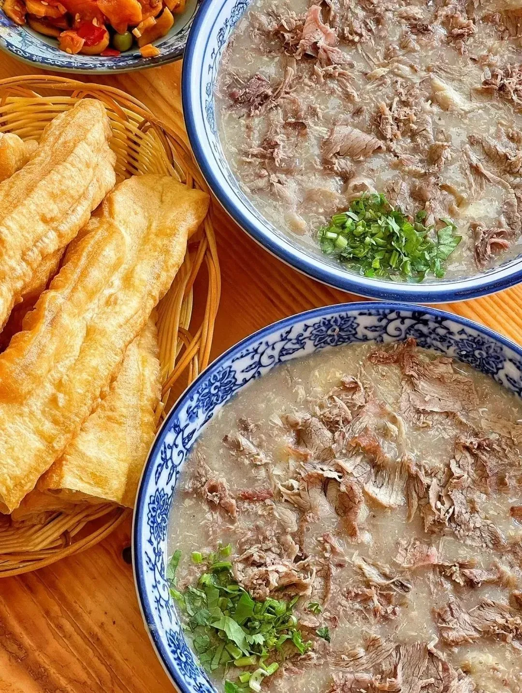
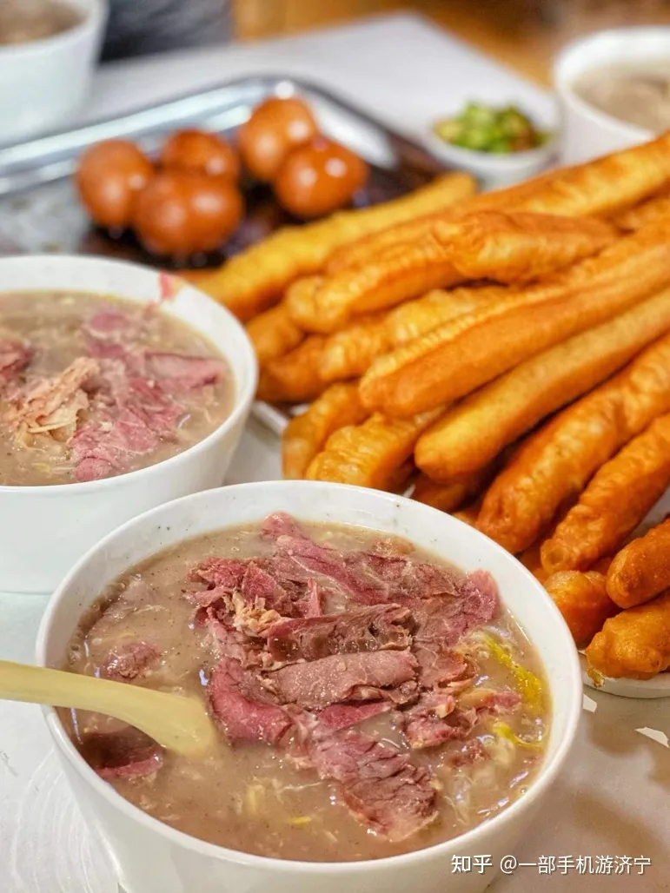
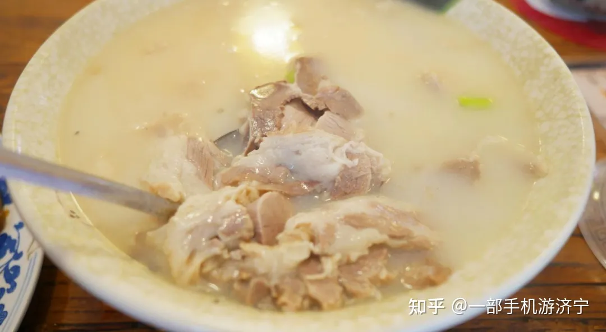
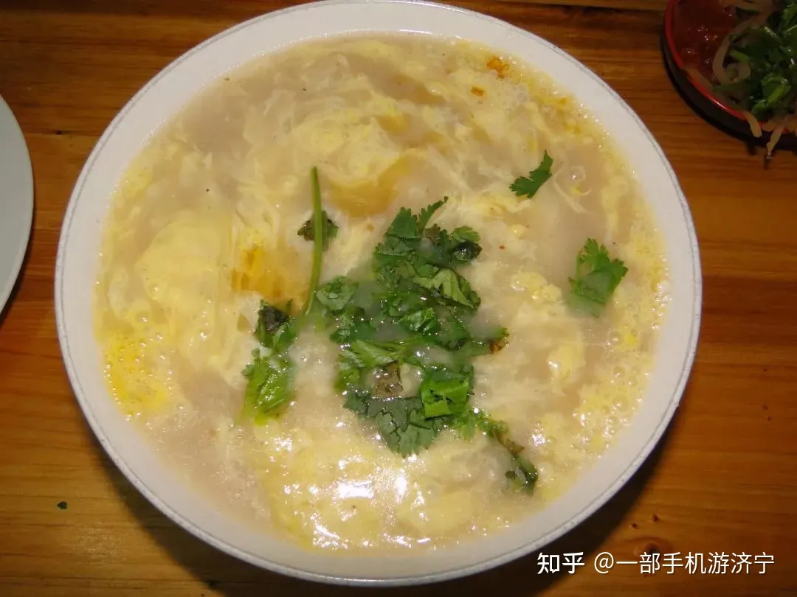

济宁美食推荐 | 一城一味，老济宁糁汤
发布时间: 2023-04-27 4859 次浏览
-
济宁作为京杭大运河上的重要节点城市，饮食文化也是融南汇北、空前兴盛。美食不可辜负，在初夏时节，带上家人孩子，约上三五好友，一起在济宁探索城市专属的美食味道吧！
当整个城市还在酣睡着，糁的香气已经悄悄飘向街道了。一碗爽口香辣的热糁，几根酥香金黄的油条，最惬意的一天就这样在头锅糁里开始。
糁汤是中国地方特色传统风味小吃，获得过山东省十大金牌旅游小吃、好客山东网红好物 、中国首届金牌旅游小吃称号。糁汤不腥不膻，鲜美可口，色香味俱佳。薄薄的肉片融汇在浓郁香辣的糁汤里，吃肉不见肉，原汤原味，浓香诱人，成为济宁早餐市场上的“三大金刚”之一。“金刚”在这里是指老百姓吃早餐经常点、绕不开的刚性消费，糁汤应占首位。济宁糁汤店遍布大街小巷，以猪糁、羊糁为主，鸡糁补充。糁汤配蒸饺，再拌剔骨肉，免费辣椒油。羊糁算是糁中之糁，略显高贵，姜末、香菜自选。平民百姓喝一碗糁汤，再要几元油饼或烫面角，再配免费小咸菜、辣椒糊，也是喝得精神舒畅，一上午劲头十足。
糁的历史悠久。糁字最早见于春秋时期的《墨子非儒下》“孔子穷于陈蔡，藜羹不糁”，至今已有2400 多年的历史。相传糁是古代西域人的早餐饮料，唐代传入内地。当时叫“肉湖”。后来仿制者越来越多，到了明朝末年，几经演变改进逐渐形成独具一格的沂州名吃。当地人将这种肉粥直呼为糁了。清康熙年间编纂的《沂州志》“祭祀篇”记载的16 种祭品中，有“糁食”可见。目前，济宁市区的糁汤铺子不下几百家。
主要口味和特点：此汤以多种肉类为主，又加以数种配料，热量高，味道全，冬季特别受人欢迎。喝糁有四大讲究，即热辣香肥，一碗热糁配以油条、烧饼、油饼、蒸饺等食用，是美好的早餐享受。糁不仅味美可口，营养丰富，而且有祛风驱寒、开胃、利尿、止呕等功效。
黄河文化旅游宣传平台
联系电话: 17753010787
版权所有：山东大学技术团队
技术支持：山东大学技术团队